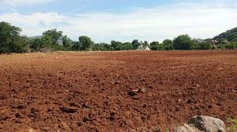

Dharmapuri District's agriculture spans approximately 245,000 hectares, with 65% of its geographical area dedicated to farming. The district's fertile soil, favorable climate, and adequate water supply from the Kaveri River, Krishna River, and numerous tanks and canals make it suitable for various crops. Paddy, sugarcane, groundnut, turmeric, and mangoes are the major crops, with Dharmapuri ranking among Tamil Nadu's top sugarcane and turmeric producers, earning it the nickname "Turmeric City." The district's mango varieties, such as Alphonso and Totapuri, are renowned for their juiciness. Farm mechanization, contour farming, and terracing enhance efficiency and productivity across 140,000 hectares of net sown area. The district's agricultural landscape comprises 120,000 hectares of irrigated land and 125,000 hectares of rain-fed land. Key agricultural blocks include Dharmapuri, Harur, Pappireddipatti, and Pennagaram. To address challenges like water scarcity, soil degradation, and climate change, initiatives focus on drought-tolerant crops, organic farming, and soil conservation. Government schemes, such as crop insurance and input subsidies, benefit farmers. With its strengths in crop diversity, irrigation infrastructure, and farmer support, Dharmapuri District's agriculture sector continues to evolve, embracing innovative practices for sustainable growth and prosperity, aiming to increase crop yields, improve quality, and enhance farmers' incomes across its vast agricultural area.
Dharmapuri District's soil composition primarily consists of red soil, covering approximately 70% of the district's geographical area. This red soil is rich in iron and aluminum oxides, with a pH range of 6.5 to 7.5, making it suitable for crops like sugarcane, turmeric, and mangoes. The remaining 30% comprises black soil (15%), clay soil (10%), and sandy soil (5%). Red soil's characteristics, such as good water-holding capacity and fertility, support the district's agricultural dominance in turmeric (40% of India's production) and sugarcane (20% of Tamil Nadu's production). Efforts to maintain soil health through organic farming and conservation practices ensure sustained productivity and crop diversity. Key red soil regions include Dharmapuri, Harur, and Pappireddipatti blocks.
| Crop Type | Percentage of Total Agriculture |
| Paddy(Rice) | 20% |
| Pulses | 15% |
| Bananas | 10% |
| Mangoes | 8% |
| Groundnuts | 7% |
| Vegetables | 5% |
| Flowers(Marigold,Jasmine) | 3% |
| Sugarcane | 5% |
| Others Fruits (Guava, Sapota) | 2% |